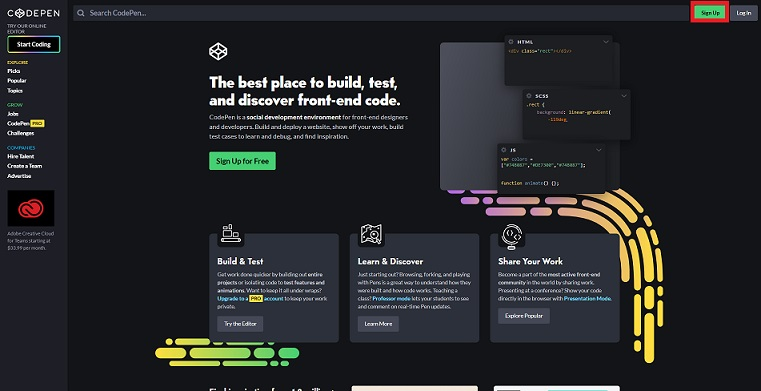
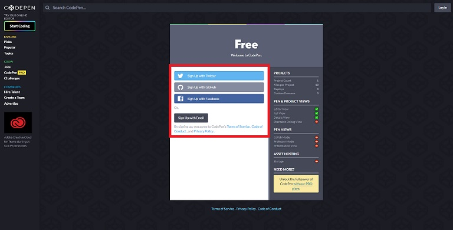
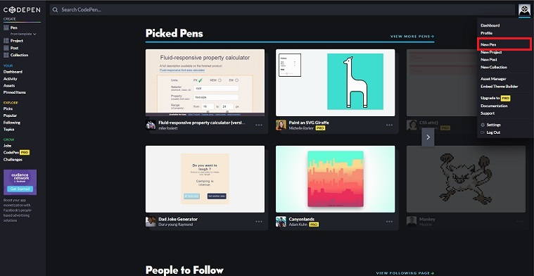
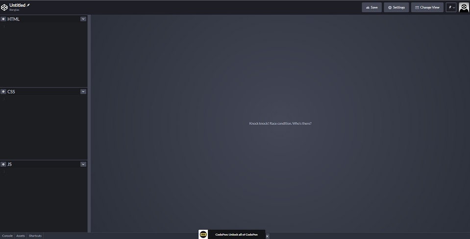
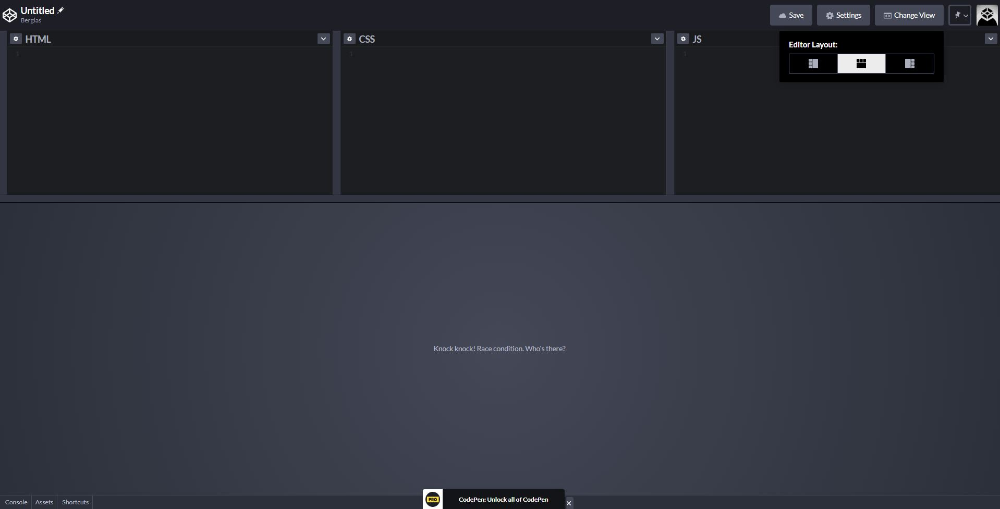

網頁前端入門-HTML教學實戰篇
2020-05-20

上篇帶大家認識到什麼是HTML了，這篇要帶給大家實戰，教導使用CodePen(不認識的可以從上篇開始看)這個工具來開發網頁，那就讓我們一起來寫自己的第一個網頁程式吧！
開發工具介紹
知道什麼是HTML之後我們就要來著手開發它了，至於要用什麼工具開發呢？我想先降低對於大家的工具難度，這邊我推薦使用CodePen這個線上工具，不用安裝任何程式以及即時顯示畫面(註冊帳號即可使用)，事不宜遲我們就先來註冊一個帳號吧!
STEP1 到官網點選「Sign Up」。

STEP2 選擇快速註冊，或者使用信箱認證註冊。

STEP3 註冊完後登入，選擇「New Pen」(建立一個全新空白檔案)

STEP4 完成囉，開始開發囉~

如STEP4示意圖。這就是CodePen的專案開發介面，主要有四大區塊HTML、CSS、JS(JavaScript)、即時顯示畫面(最大區塊的部分)，有些人的畫面可能是上下排版(如下圖)，這方面我們可以透過上方的「Change View」做切換，看自己喜歡做選擇：

這樣就大功告成啦！恭喜你/妳邁出了第一步，接下來我們來初戰HTML吧！
實作
依照剛剛我們開啟CodePen的專案開發介面之後，等有飯粒地方的程式碼，貼於CodePen中的HTML區塊中。
標題
標題為<h1> <h2> <h3> <h4> <h5> <h6>六種，分別代表不同重要程度、字體大小的屬性，h1最為重要(字體最大)遞降至h6最為不重要(字體最小)。
範例：
<h1>水果介紹一</h1>
<h2>水果介紹二</h2>
<h3>水果介紹三</h3>
<h4>水果介紹四</h4>
<h5>水果介紹五</h5>
<h6>水果介紹六</h6>圖片
圖片為<img>，標籤裡定義兩種屬性：
src：圖片來源（src=>source），一個網址。
alt：當瀏覽者無法正確看到圖片時(發生於無效連結、或者其他錯誤導致)，所呈現說明文字。
範例：
<img src='./wjGKvbY.jpg' alt='找不到香蕉'>
<img src='./i7x979K' alt='找不到蘋果'>
<img src='./NvZ5pZV.jpg' alt='找不到草莓'>
清單
清單主要由以下三種標籤組成：
ul：清單的主體，用來定義不分順序的列舉項目，像是「●」這樣。
ol：清單的主體，用來定義分順序的列舉項目，像是「1.~4.」這樣。
li：清單的內容，產生各個項目。
<ul>
<li>香蕉</li>
<li>蘋果</li>
<li>草莓</li>
</ul>
<ol>
<li>香蕉</li>
<li>蘋果</li>
<li>草莓</li>
</ol>表格
表格主要由以下四種標籤組成：
<table>：表格的主要身體，用來。
<tr>：表格的列(Row、橫向)，需包含在<table>內。
<th>：表格標題行，需包含在<tr>內。
<td>：表格的行(Column、直向)，需包含在<tr>內。
範例：
<table>
<tr>
<th></th>
<th>香蕉</th>
<th>蘋果</th>
<th>草莓</th>
</tr>
<tr>
<td>價錢</td>
<td>32/斤</td>
<td>35/粒</td>
<td>250/盒</td>
</tr>
<tr>
<td>熱量</td>
<td>91大卡/100g</td>
<td>45大卡/100g</td>
<td>32.5大卡/100g</td>
</tr>
</table>超連結
超連結為<a>，標籤裡定義一種屬性：
href：連結網址，href為hypertext reference(超文本索引)的縮寫。
<a href='https://berglas.github.io/'>巴格.生活日記•學習筆記</a>
<a href='https://zh.wikipedia.org/wiki/%E9%A6%99%E8%95%89'>香蕉WIKI</a>
<a href='https://zh.wikipedia.org/wiki/%E8%8B%B9%E6%9E%9C'>蘋果WIKI</a>
<a href='https://zh.wikipedia.org/wiki/%E8%8D%89%E8%8E%93'>草莓WIKI</a>段落
<p>香蕉（學名：Musa × paradisiaca），又名甘蕉、芎蕉、芽蕉，弓蕉（閩南語：king-tsio/kin-tsio/kim-tsio；客家語：Khiûng-tsiâu），為芭蕉科芭蕉屬小果野蕉（M. acuminata）及野蕉（M. balbisiana）的自然及人工栽培雜交種，為多年生草本植物。果實長有棱；果皮黃色或綠色，果肉白色，味道香甜。主要生長在熱帶、亞熱帶地區。原產於亞洲東南部熱帶、亞熱帶地區。佤語稱為「muah nbaex」[2]。
香蕉原產於熱帶的馬來群島及澳洲北部地區，最早可能是在巴布亞紐幾內亞馴化[3] [4]，未受人類馴化的野生蕉體型微小，難以打開果實且大部分為種子，與能撥開直接吃的食用蕉差異頗大，是人類以栽培的方式才獲得黃色香蕉。至少有107個國家生產香蕉[5]。種植香蕉主要是為其果實，偶爾會用作纖維、香蕉酒、香蕉啤酒或園藝植物。2013年香蕉是產值第四大的食用植物，僅次於米、麥及玉米[6]。
現代培植的香蕉因為基因單一，會因感染黃葉病而引發細胞程序性死亡而大受打擊，因此野生香蕉的基因常被拿來研究和雜交。
</p>CodePen畫面參考
See the Pen HTML Basis by Berglas (@berglas) on CodePen.
小結
現在你/妳已經會蓋房子了，但還不美觀，所以接下來要開始教導大家如何裝潢你/妳的家，沒錯~我們要開始學CSS了，CSS就是用來把你網頁美化的程式語言，下一篇我們來認識什麼是CSS吧!